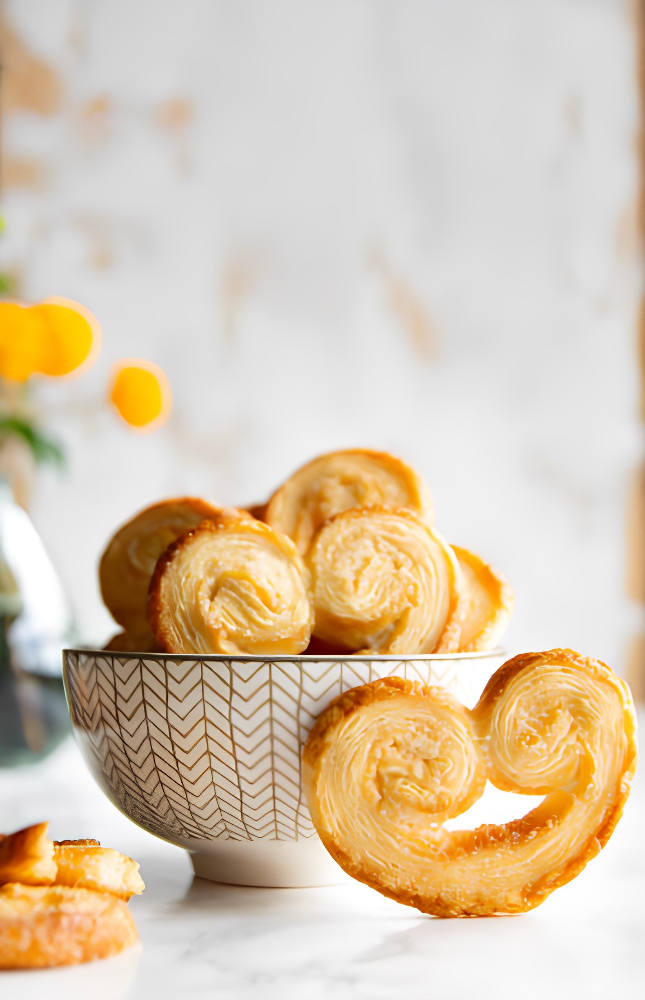

Palmiers, also known as elephant ears or palm leaves, are a delightful French pastry made from puff
pastry and sugar.
Ingredients
1 sheet of puff pastry (thawed if frozen)
1 cup granulated sugar
Extra sugar for sprinkling (optional)

Instructions
1.Preheat the Oven
Preheat your oven to 400°F (200°C). Line a baking sheet with parchment paper.
2.Sprinkle Sugar
Sprinkle a generous amount of granulated sugar evenly over a clean surface or a large piece of parchment
paper. Unfold the puff pastry sheet on top of the sugar.
3.Roll and Fold
Roll out the puff pastry to make it slightly larger, pressing the sugar into the pastry on both sides.
You can use a rolling pin to help with this.
4.Fold In
Starting from each long side, fold the pastry towards the center so they meet in the middle. The folds
should almost touch, resembling a book.
5.Fold Again
Fold the pastry again along the centerline, creating a double fold like a book. This will give you the
classic palmier shape.
6.Chill (Optional)
If the pastry becomes too soft while working with it, you can place it in the refrigerator for about
15-20 minutes to firm it up.
7.Slice
Using a sharp knife, slice the pastry into 1/2-inch to 3/4-inch slices.
8.Arrange on Baking Sheet
Place the slices on the prepared baking sheet, leaving some space between each as they will expand
during baking.
9.Bake
Bake in the preheated oven for 12-15 minutes or until the palmiers are golden brown and crispy. Keep an
eye on them to prevent burning.
10.Cool
Allow the palmiers to cool on the baking sheet for a few minutes before transferring them to a wire rack
to cool completely.
11.Optional: Sprinkle with Sugar
If desired, you can sprinkle more sugar over the palmiers while they are still warm.
12.Serve
Once completely cooled, serve and enjoy your homemade palmiers!
These sweet and flaky palmiers are perfect for any occasion and pair wonderfully with coffee or tea.😋